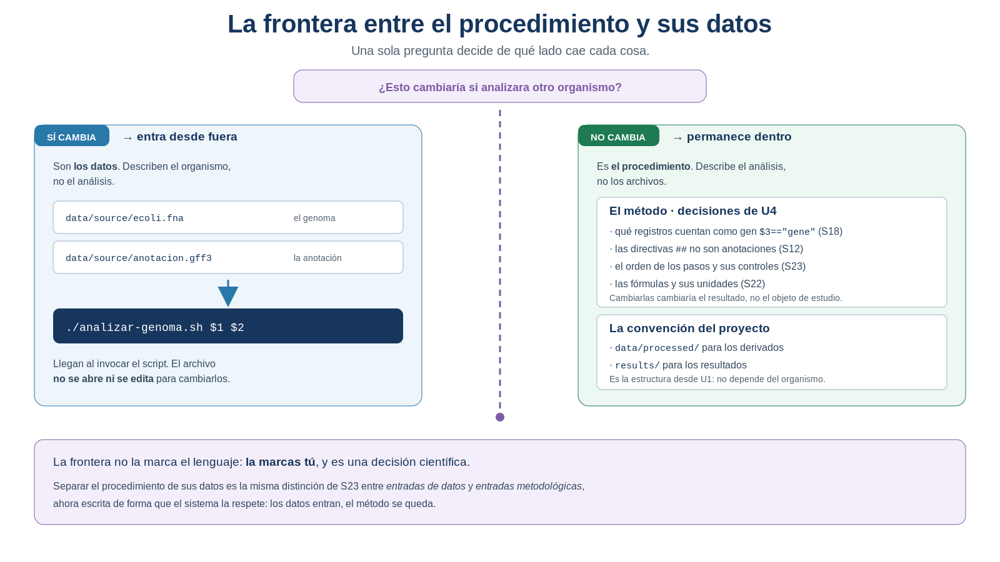
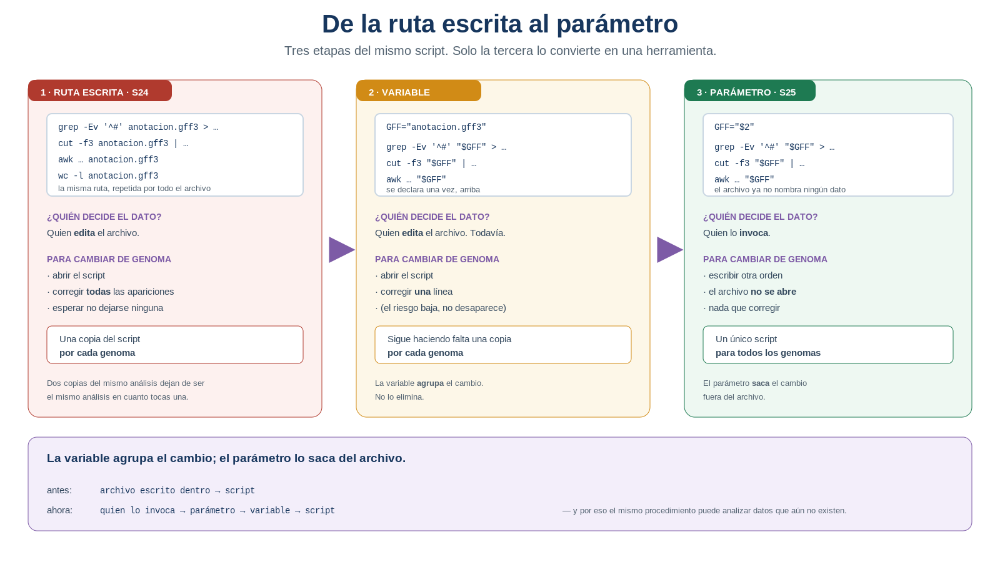
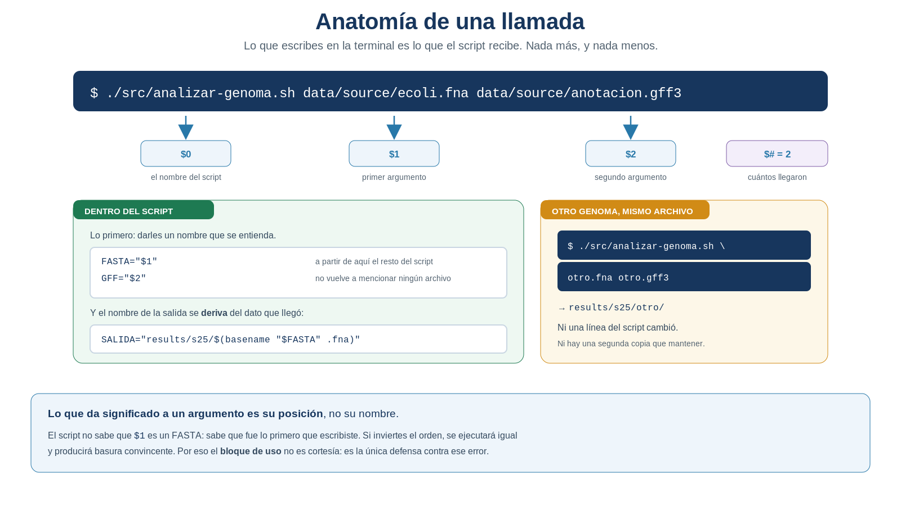
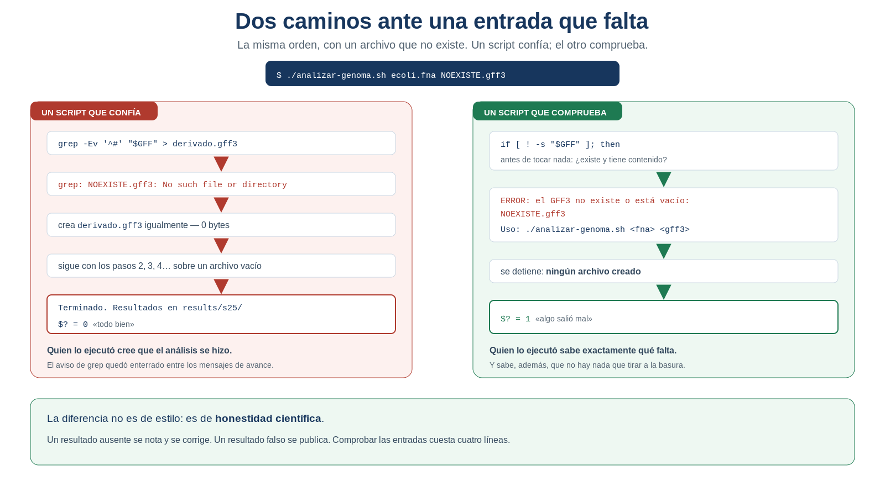

S25 — Parametrizar: separar el procedimiento de sus datos
Antes de clase harás un primer intento sin ejecutar nada: auditar tu propio script y decidir, línea por línea, qué describe el análisis y qué describe el organismo. Durante el taller transformarás el script para que los datos entren desde fuera, y le enseñarás a comprobar que existen antes de trabajar. Después lo aplicarás a un genoma que no es el tuyo y compararás los dos resultados.
El primer intento es formativo: importa que tomes decisiones argumentadas, no que aciertes.
Ficha del módulo
| Elemento | Descripción |
|---|---|
| Sesión | S25, 2 horas |
| Unidad | U5. Automatización de análisis bioinformáticos con Shell |
| Competencia principal | E. Automatización y scripting |
| Competencias integradas | A. Documentación reproducible; C. Manejo de datos biológicos; D. Análisis de datos genómicos |
| Propósito | Trazar la frontera entre lo que permanece —el procedimiento— y lo que cambia —los datos—, y hacer que lo segundo entre desde fuera y se compruebe antes de usarse |
| Consulta previa del Plan | El script de S24 y una lectura breve sobre variables, parámetros y pruebas; este módulo es la lectura autocontenida de la sesión |
| Continuidad | S24 dejó un script con las rutas escritas dentro, que imprime sus controles pero no impone ninguno; S25 resuelve las dos cosas, porque son la misma |
| Lectura indispensable | Secciones 1–6 de este módulo (~50 min) |
| Lectura base de la unidad | Buffalo (2015), Cap. 12 — continúa; la evidencia se entrega en S26 |
| Lectura de consulta | Sección 7; la sección S24 de tu propio doc/protocolo.md |
| Primer intento | Prácticas 1 y 2: auditoría de la frontera y diseño de la invocación, 40 min, sin ejecutar nada |
| Evidencia | Script parametrizado que valida sus entradas, aplicado a dos genomas distintos, con su comparación |
| Tarea numerada | Ninguna. La evidencia integradora de la unidad se entrega en S28 |
Sigues sin aprender nada nuevo sobre cómo interrogar un genoma: grep, cut, sort, uniq y awk son los de siempre y hacen lo de siempre. Lo que aprendes hoy es a decidir qué parte de tu procedimiento habla del método y qué parte habla de tus archivos — y esa es una decisión científica, no una construcción de shell. Las variables son la consecuencia, no el tema.
Relación con lo que ya sabes
S24 S25
Se ejecuta solo → Sirve para cualquier genoma
"escribo una orden y funciona" "escribo una orden, le digo cuál, y funciona"Al cerrar S24 hiciste dos cosas que hoy se cobran su recompensa. Contaste cuántas veces aparecía el nombre de tu archivo de anotación dentro del script —ese número es el punto de partida de la sesión— y guardaste la versión de ese día con su fecha. Hoy no vas a escribir otro script: vas a transformar ese, y comparar las dos versiones es la mejor prueba de que entendiste qué es parametrizar.
| Habilidad que ya tienes | Dónde la aprendiste | Qué cambia en S25 |
|---|---|---|
| Distinguir entradas de datos y entradas metodológicas | U4, S23 | Esa distinción deja de vivir en el protocolo y se escribe en el script |
| Comprobar que un archivo existe y no está vacío | U2, S5; U4, S23 | Ahora lo hace el script, y decide si continuar |
El código de salida y echo $? |
S24, Práctica 4 | Deja de ser un diagnóstico y pasa a ser algo que tú produces |
Los mensajes de avance con echo |
S24 | Aparece un segundo canal: el de error, que no se confunde con los resultados |
| Que un script puede terminar bien sin haber hecho nada | S24, §6 | Hoy se resuelve: se comprueba antes de trabajar |
Los campos de awk ($1, $3, $7) |
U4, S22 | Aparece un $1 distinto, el del shell, y hay que aprender a no confundirlos |
Lo nuevo de hoy no es una operación sobre datos: es que tu procedimiento deja de hablar de tus archivos y empieza a hablar de un genoma cualquiera.
Dónde estás en la Unidad 5
S24 GUARDAR el procedimiento ✔ resuelto
▶ S25 SEPARARLO de sus datos ← estás aquí
S26 REPETIRLO sin repetirte
S27 ENTREGARLO a otra persona
S28 INTEGRARLO todo
S29 ESCALARLO fuera de tu sesión| Pregunta de la unidad | En S25 |
|---|---|
| ¿Cómo ejecuto el análisis sin copiar treinta comandos? | ✔ Resuelta en S24 |
| ¿Cómo aplico el mismo análisis a otro genoma sin editar el archivo? | ✔ Se resuelve hoy |
| ¿Cómo detecto que falta una entrada antes de empezar? | ✔ Se resuelve hoy |
| ¿Cómo consigo que se detenga en vez de producir basura convincente? | ✔ Se resuelve hoy |
| ¿Qué parte de mi análisis depende del organismo y qué parte no? | ✔ Se resuelve hoy |
| ¿Cómo lo aplico a cien genomas? | ☐ S26 |
Dónde estás en la investigación
La narrativa del curso no se ha interrumpido. Sigues en el mismo análisis, con las mismas preguntas biológicas, y cada sesión ha añadido un verbo:
S18 Seleccionar → qué evidencia cuenta
S19 Identificar → de qué objeto habla
S20 Normalizar → bajo qué representación se compara
S21 Confrontar → qué queda en pie ante una fuente ajena
S22 Cuantificar → cuánto importa lo que encontré
S23 Integrar → puede rehacerse entero
S24 Guardar → se rehace solo
S25 Separar → sirve para cualquier genoma ← hoyResultados de aprendizaje
Al finalizar la sesión podrás:
- Distinguir, en tu propio script, qué describe el análisis y qué describe el organismo, y justificar cada decisión.
- Explicar por qué un procedimiento científico no debería contener el nombre de un genoma.
- Sustituir un valor repetido por una variable, y comprobar que el comportamiento no cambió.
- Proteger las expansiones con comillas dobles, y explicar qué ocurre sin ellas.
- Recibir datos desde fuera mediante parámetros posicionales, sin editar el archivo.
- Derivar los nombres de salida del dato recibido, de modo que dos ejecuciones no se pisen.
- Comprobar las entradas antes de trabajar y detener la ejecución con un mensaje útil y un código de salida distinto de cero.
- Distinguir el canal de salida del canal de error, y explicar por qué no deben mezclarse.
- No confundir el
$1del shell con el$1deawk, y explicar el papel de las comillas. - Aplicar el mismo procedimiento a dos genomas distintos e interpretar biológicamente las diferencias, distinguiendo las que vienen del organismo de las que vienen de la anotación.
Lista de verificación previa
Antes del taller comprueba que tienes:
Sirve cualquier bacteria con FASTA y GFF3 en el mismo recurso del que descargaste el tuyo. Elige uno suficientemente distinto —otro género, no otra cepa de la misma especie— para que la comparación de la Práctica 6 tenga algo que interpretar. Documenta su procedencia con la misma ficha de U3: sin ella, el segundo análisis no es evidencia.
Ruta de S25
| Momento | Qué hacer | Tiempo estimado |
|---|---|---|
| Antes de clase | Leer las secciones 1–6. Auditar la frontera y diseñar la invocación (Prácticas 1 y 2) | 50 + 40 min |
| Taller (1.ª hora) | Dar nombre a lo que se repite y hacer que el dato entre desde fuera (Prácticas 3 y 4) | 60 min |
| Taller (2.ª hora) | Enseñar al script a comprobar, y provocar los fallos (Práctica 5) | 60 min |
| Después del taller | Aplicarlo a otro genoma, comparar, interpretar y documentar (Práctica 6) | 100 min |
Las secciones 1–6 son indispensables; la sección 7 es de consulta y sostiene el puente a S26.
Igual que en S24: Concepto esencial (sin esto no puedes hacer la práctica), Concepto de apoyo (te ahorra tiempo, puedes volver después) y Consulta (amplía o matiza).
En el taller se transforma el script y se le añaden las comprobaciones. La ejecución sobre el segundo genoma y su interpretación se terminan después. El núcleo que no debe recortarse es:
decidir la frontera → parametrizar → comprobar → contrastar con el resultado de S241. Cuenta las rutas: el precio de editar [Indispensable]
Concepto esencial
Al cerrar S24 te pedimos un número: cuántas veces aparece el nombre de tu archivo de anotación dentro del script. Ábrelo y ten ese número delante. Suma también las apariciones del FASTA y del directorio de resultados.
Ahora imagina el escenario más probable del semestre: llega otro genoma. El del mini proyecto, el que te toque en una evaluación, el que traiga un compañero. Y tienes dos opciones.
| Opción 1 — Editar el script | Opción 2 — Cambiar solo los datos |
|---|---|
| Abres el archivo | No lo abres |
| Buscas todas las apariciones de cada ruta | — |
| Las cambias una por una | — |
| Esperas no haberte dejado ninguna | — |
| Guardas una copia distinta por genoma | El archivo sigue siendo uno |
| Ahora tienes dos procedimientos que mantener | Sigues teniendo un procedimiento |
| Si mejoras uno, el otro se queda atrás | La mejora vale para todos |
La opción 1 tiene un problema que va más allá de la comodidad, y conviene decirlo con claridad:
Dos copias del mismo análisis dejan de ser el mismo análisis en cuanto tocas una.
A partir de ese momento no puedes afirmar que los dos genomas se analizaron igual — y esa afirmación es justo lo que hace comparables dos resultados. Sustituir el copiado por la edición no es automatizar: es cambiar de sitio el mismo riesgo.
1.1 La pregunta científica de hoy
Otra vez no es una pregunta sobre el genoma. Es una pregunta sobre el método, y de las importantes:
¿Por qué un procedimiento científico contiene el nombre de un archivo concreto?
Piénsalo desde la sección de Métodos de un artículo. Ahí escribes «se contaron los registros de tipo gene excluyendo pseudogenes», no «se abrió el archivo GCF_000005845.2_ASM584v2_genomic.gff de la carpeta Descargas». El método describe qué se hace; los datos concretos van en otro apartado, precisamente porque son intercambiables.
Tu script, tal como está hoy, mezcla las dos cosas. Hoy las separas.
2. Qué describe el análisis y qué describe el organismo [Indispensable]
Concepto esencial
Esta es la sección central de la sesión y no contiene ni una línea de código.
Abre tu script y recorre cada línea con una sola pregunta:
¿Esto cambiaría si analizara otro organismo?

Figura 25.1. La frontera entre el procedimiento y sus datos. Es la misma distinción que hiciste en S23 entre entradas de datos y entradas metodológicas, ahora escrita de forma que el sistema la respete. Elaboración propia.
2.1 Las tres categorías
Aplicar la pregunta produce tres montones, no dos. La confusión más común de la sesión es no ver el tercero.
| Categoría | Ejemplos en tu script | ¿Dónde va? |
|---|---|---|
| Los datos | data/source/genoma.fna, data/source/anotacion.gff3 |
Fuera: entran al invocarlo |
| El método | que las directivas ## no son registros (S12); que un gen es $3=="gene" y no pseudogene (S18); el orden de los pasos y sus controles (S23); la fórmula fin − inicio + 1 (S22) |
Dentro: es lo que el script es |
| La convención del proyecto | data/processed/ para derivados, results/ para resultados, el nombre de las salidas |
Dentro, pero derivado del dato que llegue |
Fíjate en el segundo montón, porque es el que da sentido a todo:
Las decisiones metodológicas de la Unidad 4 no son parámetros. Son el procedimiento.
Si convirtieras en parámetro la definición de gen, no tendrías una herramienta más flexible: tendrías una herramienta que no sabe qué cuenta, y cada ejecución respondería a una pregunta distinta. Un procedimiento que se puede configurar para dar cualquier resultado no es un procedimiento.
IDEA CLAVE. Parametrizar no es «sacar fuera todo lo que se pueda». Es sacar fuera exactamente los datos, y dejar dentro el método. Un parámetro de más convierte tu herramienta en un formulario vacío; un parámetro de menos te obliga a editar el archivo.
2.2 Por qué las dos limitaciones de S24 eran una sola
Concepto de apoyo
S24 cerró con dos problemas que parecían independientes: las rutas escritas dentro, y unos controles que se imprimían pero no detenían nada. Hoy se resuelven juntos, y no por casualidad.
Mientras las rutas estaban dentro, el script podía suponer que sus entradas existían: las habías escrito tú, mirándolas. En cuanto el dato entra desde fuera, esa suposición se cae:
el dato entra desde fuera
↓
el script ya no sabe qué le van a dar
↓
tiene que preguntarloPor eso parametrizar y validar se aprenden en la misma sesión. No son dos temas: son las dos caras de abrir el procedimiento al mundo.
Práctica 1 — Auditar la frontera (antes de clase, primer intento)
Pregunta metodológica. En mi propio script, ¿qué describe el análisis y qué describe mi genoma?
Objetivo. Decidir la frontera antes de escribir una sola línea de código.
Antes de clase. En doc/s25-primer-intento.md, sin ejecutar ni modificar nada:
Recupera el número que anotaste al cerrar S24: cuántas veces aparecía dentro del script el nombre de tu archivo de anotación. Cuenta ahora también el FASTA y el directorio de resultados.
Clasifica cada valor literal que aparezca en el script, aplicando la pregunta de la Sección 2:
Valor literal Línea(s) ¿Cambiaría con otro organismo? Categoría ¿Entra desde fuera? data/source/anotacion.gff3… sí dato sí, $2$3=="gene"… no método no results/s24/… no, pero el nombre sí convención derivado Justifica los casos dudosos. Habrá al menos uno. Escribe por qué lo pusiste donde lo pusiste.
Responde por escrito: ¿por qué la definición de gen no debería ser un parámetro? Si no estás de acuerdo, argumenta lo contrario: es una discusión legítima y se abordará en el taller.
Cuenta los parámetros que va a tener tu script. Si te salen más de tres, revisa: probablemente estés sacando fuera algo que es método.
Escribe la línea de uso actualizada, con los argumentos en el orden que decidas.
Producto esperado. La tabla de clasificación completa, con los casos dudosos justificados y la línea de uso propuesta.
Criterio de logro: cada valor está clasificado en una de las tres categorías, y puedes defender por qué el método se queda dentro.
Práctica 2 — Diseñar la invocación y predecir los fallos (antes de clase, primer intento)
Pregunta metodológica. ¿Qué debería ocurrir cuando a mi herramienta le dan algo que no espera?
Objetivo. Decidir el comportamiento antes de programarlo, que es el orden correcto.
Antes de clase. En el mismo documento, y sin probar nada:
Escribe la invocación completa para tu genoma y para el segundo, con rutas reales.
Predice qué haría tu script de S24 —el de ayer, sin parámetros ni comprobaciones— en cada uno de estos casos, y qué querrías que hiciera la versión de hoy:
# Situación Qué haría el de S24 Qué debería hacer el de hoy 1 No se le da ningún argumento … … 2 Se le da un solo archivo … … 3 El FASTA no existe … … 4 El GFF3 existe pero está vacío … … 5 Se le dan los dos archivos en orden invertido … … 6 La ruta contiene un espacio … … Marca cuál de los seis es el más peligroso y explica por qué. Pista: no es el que da un error más feo.
Redacta los mensajes de error que te gustaría leer en los casos 1 a 4. Un mensaje útil dice qué falta, cuál era el valor recibido y cómo se invoca el script.
Responde: el caso 5 —orden invertido— ¿puede detectarse comprobando que los archivos existen? Si no, ¿qué haría falta?
Ver retroalimentación
Ábrelo después de haber llenado la tabla. Las seis situaciones dependen del comportamiento del shell, no de tu genoma: la columna «qué haría el de S24» es la misma para todo el mundo.
| # | Qué hace el script de S24 (sin parámetros ni comprobaciones) |
|---|---|
| 1 | Ignora que no le diste nada y trabaja sobre las rutas escritas dentro. Parece funcionar. |
| 2 | Igual: el argumento sobra y se descarta sin aviso |
| 3 | Los comandos fallan uno a uno, pero el script continúa y termina con código 0 |
| 4 | No falla nada: procesa un archivo vacío y produce resultados vacíos o con ceros |
| 5 | Se ejecuta entero y produce resultados plausibles pero equivocados |
| 6 | La ruta se parte en dos argumentos; se procesa un archivo que no existe |
Cuál es el más peligroso (paso 3). El 5, el del orden invertido. Los otros o bien avisan, o bien producen algo visiblemente vacío. El 5 produce números completos, con el formato correcto, que puedes copiar al protocolo sin sospechar nada. La pista del enunciado apuntaba justo ahí: no es el que da el error más feo, es el que no da error.
Los casos 1 y 2 comparten una propiedad incómoda: un script con rutas escritas dentro no puede distinguir entre «me llamaron bien» y «me llamaron mal», porque nunca mira lo que le pasaron.
Paso 5 — el orden invertido no se detecta comprobando existencia. Ambos archivos existen; la comprobación pasa. Detectarlo exige mirar el contenido, no el nombre: que el FASTA empiece por >, que el GFF3 tenga nueve columnas separadas por tabuladores o su cabecera ##gff-version. Comprobar que un archivo existe es comprobar lo más barato, no lo que importa. Esa distinción es lo que trabajas en la Práctica 5.
Comprobar la extensión del nombre (.fna, .gff) es mejor que nada, pero sigue siendo una comprobación sobre la etiqueta, no sobre el dato. Un archivo mal nombrado la burla.
Producto esperado. La tabla de seis predicciones y los mensajes de error redactados.
Criterio de logro: las seis predicciones están escritas antes del taller y los mensajes que propones incluyen el valor recibido, no solo el aviso.
3. Dar nombre a lo que se repite [Indispensable]
Concepto esencial
Antes de que el dato entre desde fuera, hay un paso intermedio que resuelve la mitad del problema y no cambia nada del comportamiento: decir una sola vez qué archivo se usa, y referirse a él por su nombre el resto del script.
Sintaxis mínima
GFF="data/source/anotacion.gff3" # asignación: sin espacios alrededor del =
grep -Ev '^#' "$GFF" > "$DERIVADO" # expansión: el $ recupera el valor¿Qué hace? Guarda un valor bajo un nombre y lo recupera donde haga falta.
¿Por qué aparece en esta sesión? Porque la ruta aparecía repetida por todo el script, y cada repetición era un sitio más donde equivocarse al cambiarla.
3.1 Las dos reglas que hay que respetar
Concepto esencial
Regla 1 — Al asignar, no hay espacios alrededor del =.
GFF="anotacion.gff3" # ✓ correcto
GFF = "anotacion.gff3" # ✗ bash: GFF: command not foundEl shell lee la línea con espacios como «ejecuta el programa GFF con los argumentos = y anotacion.gff3». El mensaje de error, que parece incomprensible, resulta lógico en cuanto sabes esto.
Regla 2 — Al expandir, siempre entre comillas dobles.
Esta parece una manía y no lo es. Compruébalo con la ruta real de la carpeta del curso, que contiene un espacio:
D="/Users/tu-usuario/Mi unidad/proyecto"
ls $D # ✗ ls: cannot access '/Users/tu-usuario/Mi': No such file or directory
# ls: cannot access 'unidad/proyecto': No such file or directory
ls "$D" # ✓ funcionaSin comillas, el shell parte el valor por los espacios y lo entrega como dos argumentos. Con comillas, lo entrega como uno solo. Como en bioinformática los nombres de archivo vienen de descargas, de otras personas y de sistemas distintos, tarde o temprano llega uno con un espacio, un paréntesis o un acento.
Este error es especialmente peligroso porque es intermitente. Tu script funciona durante semanas y un día falla, con un genoma cuyo nombre trae un espacio. Y a veces no falla: hace algo distinto en silencio. La regla práctica no admite excepciones en este curso: toda expansión va entre comillas dobles.
3.2 Un nombre que se calcula: $(...)
Concepto esencial
También puedes guardar en una variable el resultado de un comando:
Sintaxis mínima
NOMBRE="$(basename "$FASTA" .fna)" # de "data/source/ecoli.fna" → "ecoli"¿Qué hace? Ejecuta lo que hay dentro de $(...) y guarda su salida.
¿Por qué aparece en esta sesión? Porque el nombre del genoma no puede escribirse a mano —si llegara desde fuera, no lo sabrías al escribir el script—: hay que derivarlo del dato que llegue. Sin esto, la sección 4.3 no tiene solución.
basename recorta la ruta y, si le das una extensión, también la quita. Pruébalo suelto en la terminal antes de meterlo en el script: basename data/source/ecoli.fna .fna.
3.3 Lo que este paso no resuelve
Concepto de apoyo
Con variables, tu script tiene ahora las rutas en un solo sitio, arriba. Es una mejora real: cambiar de genoma pasó de tocar quince líneas a tocar dos.
Pero sigues teniendo que abrir el archivo y editarlo. Y sigues necesitando una copia por genoma si quieres conservar los dos. La opción 1 de la sección 1 sigue siendo la única disponible: solo se volvió más barata.

Figura 25.2. De la ruta escrita al parámetro. La pregunta que separa las tres etapas es siempre la misma: ¿quién decide qué datos se analizan? Elaboración propia.
Fíjate en la fila «¿quién decide el dato?». En las dos primeras etapas la respuesta es quien edita el archivo; solo en la tercera pasa a ser quien lo invoca. Ese traspaso —del que edita al que usa— es el concepto nuevo más importante de la sesión, y todo lo demás es su consecuencia.
IDEA CLAVE. Una variable agrupa el cambio; un parámetro lo saca fuera del archivo. La variable es el paso intermedio necesario —y también la trampa donde mucha gente se detiene creyendo que ya parametrizó—.
Práctica 3 — Dar nombre sin cambiar el comportamiento (durante el taller)
Pregunta metodológica. ¿Puedo reorganizar mi script y demostrar que sigue haciendo exactamente lo mismo?
Objetivo. Introducir variables y comprobar que el resultado es idéntico al de S24.
Trabaja sobre una copia con nombre nuevo y conserva intacta la de S24: cp src/analizar-genoma.sh src/analizar-genoma-s24.sh. Las dos versiones se comparan al final.
Parte A — Sustituir
Declara las variables al principio del script, después del encabezado, con los mismos valores que estaban escritos dentro:
FASTA="data/source/genoma.fna" GFF="data/source/anotacion.gff3" SALIDA="results/s25"Sustituye cada aparición por su expansión, entre comillas dobles. Ve una por una y ve tachándolas de la lista de la Práctica 1.
Comprueba que no queda ninguna: busca en el archivo el nombre del genoma. Si aparece fuera de la línea de asignación y del encabezado, se te escapó una.
Parte B — Demostrar que nada cambió
Ejecuta el script y compara sus salidas con las de S24 usando la estrategia adecuada a cada tipo de producto, como en S23: checksum para los archivos deterministas, conteo para los números.
Registra el resultado:
Producto Equivalencia esperada Estrategia Resultado inventario-features.tsvbyte a byte checksum coincide / difiere Si algo difiere, encuéntralo antes de seguir. La causa casi siempre es una expansión sin comillas o una ruta que no sustituiste.
Parte C — Provocar los dos errores clásicos
- Escribe a propósito
GFF = "data/source/anotacion.gff3", con espacios. Ejecuta, anota el mensaje y explica en una línea por qué el shell dice lo que dice. - Quita las comillas de una expansión y ejecuta el script desde una ruta que contenga un espacio. Anota qué pasa. Si tu ruta no tiene espacios, créate un directorio de prueba que sí los tenga.
Producto esperado. El script con variables, la tabla de equivalencia frente a S24 y los dos errores provocados con su mensaje.
Criterio de logro: la salida es idéntica a la de S24 —eso es lo que se evalúa— y sabes explicar los dos mensajes de error.
4. Que el dato entre desde fuera [Indispensable]
Concepto esencial
Aquí está el cambio de la sesión. En vez de escribir el valor dentro del archivo, el script lo recibe en el momento de invocarlo.
Sintaxis mínima
./src/analizar-genoma.sh data/source/ecoli.fna data/source/anotacion.gff3FASTA="$1" # lo primero que se escribió después del nombre del script
GFF="$2" # lo segundo
# $# guarda cuántos argumentos llegaron¿Qué hace? El shell entrega al script lo que escribiste después de su nombre, numerado por posición.
¿Por qué aparece en esta sesión? Porque es la única forma de que el procedimiento deje de mencionar tus archivos sin dejar de saber sobre cuáles trabajar.

Figura 25.3. Anatomía de una llamada. Lo que da significado a un argumento es su posición, no su nombre: por eso el bloque de uso no es cortesía. Elaboración propia.
4.1 El bloque de uso deja de ser un comentario
Concepto esencial
En S24, la línea de uso del encabezado era información para quien leyera el archivo. Hoy se convierte en algo más serio, por un motivo concreto: el script no sabe qué es $1. No sabe que es un FASTA. Sabe que fue lo primero que escribiste.
Si inviertes el orden —primero el GFF3, después el FASTA— el script se ejecutará igual, sin protestar, y producirá números que parecen resultados. Es exactamente el fallo silencioso de S24, ahora por otra vía.
Por eso el uso se escribe dos veces: en el encabezado, para quien lee, y en un mensaje que el script imprime cuando lo invocan mal:
if [ "$#" -ne 2 ]; then
echo "ERROR: se esperan 2 argumentos y llegaron $#." >&2
echo "Uso: $0 <genoma.fna> <anotacion.gff3>" >&2
exit 1
fi$0 es el nombre con el que se invocó el script, así que el mensaje siempre dice la verdad aunque alguien renombre el archivo.
Desde hoy no basta con que el archivo funcione: existe una manera correcta de llamarlo —cuántos argumentos, en qué orden, de qué tipo— y cualquier otra forma debería fallar de manera clara. Esa «forma oficial» es lo que quien recibe tu herramienta necesita conocer, y lo único que necesita conocer: no tiene por qué leer el interior. Por eso el bloque de uso es la parte más pública de tu script, y por eso se escribe con cuidado. En S27 volveremos sobre ello, cuando la herramienta pase a manos de otra persona.
4.2 El choque de los dos $1
Concepto esencial
Aquí hay una confusión que vas a tener sí o sí, porque acabas de aprender awk en S22:
$1 en awk |
$1 en el shell |
|
|---|---|---|
| Significa | el primer campo de la línea | el primer argumento del script |
| Lo interpreta | awk |
bash, antes de llamar a awk |
| Se protege con | comillas simples '...' |
comillas dobles "..." |
La regla práctica es simple y hay que aplicarla siempre:
# ✓ correcto: comillas SIMPLES → awk recibe su propio $3
awk -F'\t' '$3=="gene"' "$GFF" | wc -l
# ✗ incorrecto: comillas DOBLES → bash sustituye $3 (que está vacío) antes
awk -F'\t' "$3==\"gene\"" "$GFF"El segundo caso no produce un resultado raro: produce esto, que es una suerte, porque se ve.
awk: cmd. line:1: =="gene"
awk: cmd. line:1: ^ syntax errorIDEA CLAVE. Comillas simples para el programa de
awk; comillas dobles para las rutas del shell. Dentro de una misma línea conviven las dos, y cada una protege de algo distinto.
4.3 Una consecuencia inmediata: dos genomas, un solo archivo
Concepto esencial
En cuanto ejecutes el script por segunda vez con otro genoma, descubrirás un problema que no existía cuando las rutas estaban dentro:
./analizar-genoma.sh ecoli.fna ecoli.gff3 → results/s25/inventario-features.tsv
./analizar-genoma.sh salmonella.fna salmonella.gff3 → results/s25/inventario-features.tsv
↑
el segundo borró al primeroNo hay error, no hay aviso. El archivo del primer genoma simplemente ya no existe. La solución usa lo de la sección 3.2: derivar el nombre de la salida del dato que llegó.
NOMBRE="$(basename "$FASTA" .fna)"
SALIDA="results/s25/$NOMBRE"
mkdir -p "$SALIDA"Ahora cada ejecución escribe en su propio sitio, y el nombre de la carpeta dice de quién es el resultado.
No es orden por orden. Un resultado sin identificar es un resultado que no puedes citar: dentro de un mes no sabrás de qué genoma era ese inventario. Que la salida herede el nombre de su entrada es trazabilidad, la misma que persigues desde U3.
Práctica 4 — Que el dato entre desde fuera (durante el taller)
Pregunta biológica de fondo. ¿Qué contiene la anotación de este genoma? — la misma de S13, respondida hoy sin que el procedimiento sepa de cuál se trata.
Objetivo. Convertir las variables en parámetros y ejecutar el mismo archivo sobre dos genomas.
Parte A — Parametrizar
Sustituye los valores de las tres variables por los argumentos:
FASTA="$1" GFF="$2"Deriva el nombre de la salida del dato recibido, con
basename, y crea el directorio conmkdir -p. Sin esto, el segundo genoma borrará los resultados del primero.Actualiza el encabezado: la línea de uso ya no es
./src/analizar-genoma.sh, y las entradas ya no son rutas fijas sino argumentos esperados. Descríbelos.
Parte B — Ejecutar
- Ejecuta con tu genoma y comprueba que el resultado sigue coincidiendo con el de la Práctica 3.
- Ejecuta con el segundo genoma y comprueba que aparecieron dos carpetas de resultados, cada una con su nombre.
- Invierte el orden de los argumentos a propósito y observa qué ocurre. Responde: ¿protestó el script? ¿Produjo archivos? ¿Se distinguen de los buenos mirando solo el resultado?
Parte C — El choque de los $1
- Localiza en tu script una línea de
awkque use campos y comprueba con qué comillas está escrita. - Cámbiala a comillas dobles a propósito, ejecuta y anota el mensaje. Vuelve a dejarla como estaba y explica en dos líneas por qué las comillas simples son obligatorias ahí.
Producto esperado. El script parametrizado, dos carpetas de resultados y las respuestas del paso 6 y del paso 8.
Criterio de logro: el mismo archivo, sin editarlo, produce resultados identificables para dos genomas distintos; y sabes por qué el paso 6 es peligroso.
5. Un procedimiento que no supone [Indispensable]
Ya tienes un script que recibe datos. Y con ello acabas de perder la única garantía que tenías: que sus entradas existan.
Esta sección introduce varias piezas pequeñas seguidas. Para no perderte, ten presente que todas sirven a tres pasos, y solo tres, en este orden:
① COMPROBAR ② COMUNICAR EL ERROR ③ DETENER LA EJECUCIÓN
¿es utilizable lo decirlo por el canal no seguir, y avisar
que me dieron? que corresponde a quien te ejecutó
§5.1 §5.2 §5.3
if · -f · -s · -z >&2 exit 1 → $?Si al leer una pieza no sabes para qué es, vuelve a este mapa: cada una cae en una de las tres casillas. Y las tres juntas responden una sola pregunta —¿qué hace mi herramienta cuando algo falta?—, que es la pregunta con la que se juzga un script.

Figura 25.4. Dos caminos ante una entrada que falta. Un resultado ausente se nota y se corrige; un resultado falso se publica. Elaboración propia.
5.1 Paso ① — Comprobar
Concepto esencial
Sintaxis mínima
if [ ! -f "$FASTA" ]; then
echo "ERROR: no encuentro el FASTA: $FASTA" >&2
exit 1
fi¿Qué hace? Comprueba una condición y, si no se cumple, avisa y termina.
¿Por qué aparece en esta sesión? Porque desde hoy el script no elige sus entradas: se las dan. Y lo que le den puede no existir, estar vacío o ser otra cosa.
Las comprobaciones que necesitas hoy son cuatro, y ninguna más:
| Comprobación | Qué pregunta | Cuándo se usa |
|---|---|---|
[ "$#" -ne 2 ] |
¿Llegaron los dos argumentos? | Lo primero de todo |
[ ! -f "$ARCHIVO" ] |
¿Existe y es un archivo normal? | Para el FASTA |
[ ! -s "$ARCHIVO" ] |
¿Existe y además tiene contenido? | Para el GFF3 y para los derivados |
[ -z "$VALOR" ] |
¿El valor está vacío? | Para un argumento que llegó en blanco |
-f y -s no son lo mismo, y la diferencia te va a salvar
-f solo dice que el archivo existe. -s dice que existe y no está vacío. Recuerda el fallo de S24: un comando que falla deja creado un archivo de cero bytes, que para -f es perfectamente válido. Para las entradas y para los derivados críticos, usa -s.
[ es un comando, así que necesita espacios a los lados: [ -f "$F" ], nunca [-f "$F"]. Si te da command not found: [-f, es esto.
5.2 Paso ② — Comunicar el error
Concepto esencial
Ya sabes detectar que algo falta. Ahora hay que decirlo por el canal correcto, y eso no es un detalle de estilo.
En U4 aprendiste que un comando tiene una salida estándar y una salida de error, y que se redirigen por separado. Hoy eso deja de ser teoría:
echo "[1/2] Preparando el cuerpo del GFF3..." # salida normal
echo "ERROR: no encuentro el FASTA: $FASTA" >&2 # canal de error¿Por qué separarlos? Porque quien use tu herramienta va a querer capturar los resultados sin que se le mezclen los avisos, y ver los avisos aunque haya redirigido los resultados:
./src/analizar-genoma.sh ecoli.fna anotacion.gff3 > bitacora.txtCon >&2, los errores siguen apareciendo en pantalla aunque todo lo demás se haya ido al archivo. Sin >&2, el error queda enterrado en el archivo y nadie lo ve — que es exactamente cómo se pierde un aviso importante.
5.3 Paso ③ — Detener la ejecución
Concepto esencial
Comprobar y avisar no bastan: si el script continúa, todo lo que venga después heredará el problema. Detenerse tiene dos partes —dejar de ejecutar, con exit, y decir que algo salió mal, con el número que ese exit devuelve—.
En S24 comprobaste que un script que había fallado devolvía 0, «todo bien», y aprendiste a mirarlo con echo $?. Hoy pasas al otro lado: eres tú quien produce ese número.
| Valor | Significa | Cuándo |
|---|---|---|
0 |
Terminó bien | Es lo que devuelve si llega al final sin exit |
1 (o cualquier distinto de 0) |
Algo salió mal | Lo declaras tú con exit 1 |
Parece un detalle burocrático y no lo es: en S26 vas a ejecutar este script muchas veces seguidas, y ese número será la única forma de saber cuáles de esas ejecuciones funcionaron sin leer cientos de líneas de salida.
IDEA CLAVE. Detenerse a tiempo no es un lujo del software profesional: es honestidad científica. Un resultado ausente se nota y se corrige; un resultado falso se interpreta, se discute y a veces se publica. Comprobar las entradas cuesta cuatro líneas.
Práctica 5 — Enseñarle al script a comprobar (durante el taller)
Pregunta metodológica. ¿Cómo consigo que se detenga en vez de producir basura convincente?
Objetivo. Añadir las comprobaciones mínimas y verificar que hacen lo que dicen.
Parte A — Comprobar
- Añade la comprobación del número de argumentos, lo primero de todo, con su mensaje de uso a
>&2y suexit 1. - Añade la comprobación de cada entrada:
-fpara el FASTA,-spara el GFF3. Usa los mensajes que redactaste en la Práctica 2, incluyendo el valor recibido. - Añade una comprobación de salida: después de generar el derivado, comprueba con
-sque no quedó vacío. Es el control bloqueante número 1 de tu tabla de S23, ahora impuesto por el script.
Parte B — Probar que las comprobaciones funcionan
Recorre los seis casos de la Práctica 2 y ejecútalos de verdad. Para cada uno anota: el mensaje, si se creó algún archivo y el código de salida (
echo $?inmediatamente después).# Situación Mensaje obtenido ¿Creó archivos? $?¿Coincide con mi predicción? Compara con la versión de S24. Ejecuta el script viejo con un archivo inexistente y el nuevo con el mismo. Describe la diferencia en una frase.
Comprueba la separación de canales: ejecuta con una entrada mala redirigiendo la salida normal a un archivo (
> /tmp/prueba.txt). ¿Viste el error en pantalla? ¿Qué quedó en el archivo?
Ver retroalimentación
Ábrelo después de haber recorrido los seis casos. El comportamiento de las comprobaciones no depende de tu genoma.
-f y -s no comprueban lo mismo, y la diferencia es el caso 4.
| Prueba | Es cierta cuando… | Deja pasar |
|---|---|---|
-f archivo |
existe y es un archivo regular | un archivo vacío |
-s archivo |
existe y tiene tamaño mayor que cero | — |
Por eso el GFF3 se comprueba con -s: un GFF3 de cero bytes existe, supera -f y produce silenciosamente un inventario vacío. Es el caso 4 de tu tabla, y es el que -f no atrapa.
Códigos de salida esperados. Con las comprobaciones puestas, los casos 1 a 4 terminan con $? igual a 1 —el error que tú decidiste— y sin crear ningún archivo, porque el script se detiene antes de la primera redirección. Si alguno te devuelve 0, la comprobación está después de donde debería.
Lo que sigue sin quedar resuelto. Repasa tu tabla: de los seis casos, las comprobaciones de existencia arreglan cuatro. Quedan dos.
- Caso 5, orden invertido. Los dos archivos existen y ninguno está vacío: todas las comprobaciones pasan y el script produce resultados equivocados. Solo se detecta mirando el contenido, como anticipaste en la Práctica 2.
- Caso 6, ruta con espacio. No lo arregla ninguna comprobación: lo arregla entrecomillar las variables. Si no lo hiciste, la ruta se parte en dos argumentos antes de que el script pueda examinarla, y el mensaje de error nombrará solo el primer trozo.
Que dos de seis sigan abiertos no es un fallo de la práctica: es el resultado. Comprobar que un archivo existe es la comprobación más barata, no la que importa.
Parte C — El caso que no se puede comprobar
- Vuelve al caso 5 —los argumentos invertidos—. Las comprobaciones que añadiste no lo detectan: los dos archivos existen. Escribe qué se te ocurre para reducir ese riesgo con lo que sabes hoy. Discútelo en clase: no hay una respuesta única, y reconocer un riesgo que no puedes eliminar del todo también es un resultado.
Producto esperado. El script con sus comprobaciones, la tabla de los seis casos ejecutados y la respuesta al paso 7.
Criterio de logro: ninguna entrada inválida produce archivos, todos los mensajes de error salen por >&2 y el código de salida distingue el éxito del fallo.
6. El mismo procedimiento, otro genoma [Indispensable]
Concepto esencial
Todo lo anterior tiene un propósito que no es informático. Ahora puedes hacer algo que ayer no podías:
Aplicar exactamente el mismo análisis, sin una sola diferencia, a dos organismos distintos.
Esa es la condición para comparar. La pregunta científica permanece igual —¿qué contiene esta anotación?—; lo único que cambia son los datos sobre los que se formula. Si hubieras editado el script entre un genoma y otro, cualquier diferencia en los resultados tendría dos explicaciones posibles —la biología o tu edición— y no podrías distinguirlas. Con un instrumento único, esa ambigüedad desaparece:
mismo instrumento + datos distintos → las diferencias son de los datosEs la lógica de cualquier experimento comparativo: si quieres atribuir una diferencia a las muestras, todo lo demás tiene que haber sido igual. Aquí «todo lo demás» es tu script.
6.1 Qué mirar cuando tengas los dos inventarios
Concepto de apoyo
La Práctica 6 te pedirá interpretar, y conviene saber de antemano que no toda diferencia es biológica. Al comparar dos inventarios aparecerán tres clases de diferencia y hay que separarlas:
| Lo que observas | Posible causa biológica | Posible causa técnica |
|---|---|---|
| Un genoma tiene más genes | Genoma mayor, más capacidad codificante | Distinta versión o criterio de anotación |
| Aparecen tipos de feature que el otro no tiene | El organismo tiene esos elementos | La anotación los reporta con otro vocabulario |
| Distinta proporción CDS/gen | Más genes no codificantes de proteína | Pseudogenes tratados de otro modo |
| Distinto número de replicones | Plásmidos presentes o ausentes | El ensamblado incluye o no los plásmidos |
Es el mismo razonamiento de S21, cuando confrontaste tu inventario con una fuente externa: antes de atribuir una diferencia a la biología, hay que descartar que venga del procedimiento de anotación. La honestidad aquí consiste en declarar cuándo no puedes distinguirlo con los datos que tienes.
IDEA CLAVE. Parametrizar un script no es un logro técnico: es lo que hace comparables dos análisis. Y comparar es, desde S21, la operación que convierte un resultado en una conclusión.
Práctica 6 — Dos genomas, un procedimiento (después del taller)
Pregunta biológica. ¿En qué se parecen y en qué se diferencian la anotación de mi genoma y la de otro organismo, y qué parte de esa diferencia es biológica?
Objetivo. Usar la herramienta para lo que se construyó: comparar, e interpretar con honestidad.
Parte A — Ejecutar
- Comprueba la procedencia del segundo genoma: ficha de U3 completa, con versión y checksum. Sin ella, el resultado no es evidencia.
- Ejecuta la herramienta sobre los dos genomas, sin tocar el archivo entre una ejecución y otra. Anota la orden exacta y la fecha de cada una.
- Deja constancia de que la estrategia metodológica fue idéntica. Es la afirmación que sostiene toda la comparación: comprueba, por ejemplo con un checksum del propio script, que el archivo es el mismo en las dos ejecuciones.
Parte B — Comparar
- Construye una tabla comparativa con lo que produce tu herramienta: número de replicones, tipos de feature y sus frecuencias, número de genes y de CDS, proporción CDS/gen.
- Clasifica cada diferencia con la tabla de la Sección 6.1: ¿biológica, técnica, o no distinguible con estos datos?
- Localiza al menos un caso ambiguo y explica qué evidencia adicional haría falta para resolverlo. Que exista un caso así no es un fallo de tu trabajo: es cómo son los datos.
Parte C — Interpretar y documentar
- Escribe la interpretación en dos o tres párrafos: qué puedes afirmar sobre los dos organismos, con qué confianza y qué queda abierto. Ni una afirmación sin su evidencia.
- Actualiza
doc/protocolo.mdcon la sección de S25 (plantilla en la Sección 8). - Declara las limitaciones de la herramienta tal como está: sigue procesando un genoma por invocación, sigue sin resumir el conjunto, y sigue confiando en que quien la invoque ponga los argumentos en el orden correcto.
Producto esperado. La tabla comparativa, la interpretación escrita y la sección S25 del protocolo.
Criterio de logro: las diferencias están clasificadas por su causa probable, hay al menos un caso declarado como no distinguible, y queda demostrado que la comparación solo es válida porque los dos genomas se analizaron con el mismo instrumento.
7. Reutilizable todavía no es masivo [Consulta]
Al terminar tendrás una herramienta que sirve para cualquier genoma. Compruébalo tú mismo: ejecútala para el tuyo, después para el segundo, y después para un tercero.
Y ahí vas a notar lo siguiente:
./analizar-genoma.sh g1.fna g1.gff3
./analizar-genoma.sh g2.fna g2.gff3
./analizar-genoma.sh g3.fna g3.gff3
...Funciona. Pero para doce genomas son doce órdenes escritas a mano, y para cien, cien. Y hay algo peor que el tedio: si una de esas ejecuciones falla, lo sabrás solo si estabas mirando.
| Herramienta parametrizada (hoy) | Procesamiento por lotes (S26) |
|---|---|
| Una invocación por genoma | Una invocación para el conjunto |
| Tú decides el orden y llevas la cuenta | El recorrido está escrito |
| Un resultado por ejecución, suelto | Los resultados organizados y resumidos |
| Puedes responder sobre un genoma | Puedes responder sobre el conjunto |
Esa última fila es la importante, y no es una cuestión de comodidad: hay preguntas que ningún análisis individual contiene. Cuántos genes tiene tu genoma lo sabes hoy. Cómo se distribuye el número de genes en doce genomas, cuál es atípico y por qué, no lo sabe ninguna de las doce ejecuciones por separado.
IDEA CLAVE. Hoy tu procedimiento dejó de depender de un genoma concreto. Sigue dependiendo de que alguien lo invoque una vez por cada genoma — y con ello, de que esa persona no se canse, no se salte ninguno y no deje de mirar.
8. Documentar: la sección del protocolo [Indispensable]
Agrega a doc/protocolo.md, después de la sección de S24. No sustituye a ninguna anterior.
## S25 — Separación entre procedimiento y datos
### 1. Propósito
Qué problema resuelve la parametrización en este análisis y qué permite hacer que antes no se podía.
### 2. La frontera adoptada
| Elemento | Categoría | ¿Entra desde fuera? | Justificación |
| --- | --- | --- | --- |
| Archivo FASTA | dato | sí, `$1` | Describe el organismo, no el análisis |
| Archivo GFF3 | dato | sí, `$2` | … |
| Definición de gen (S18) | método | no | Cambiarla cambiaría la pregunta, no el objeto |
| Convención de directorios (U1) | convención | derivada | … |
### 3. Entradas esperadas y parámetros
| Parámetro | Qué recibe | Formato esperado | Obligatorio |
| --- | --- | --- | --- |
| `$1` | Genoma | FASTA (`.fna`) | sí |
| `$2` | Anotación | GFF3 | sí |
Invocación: `./src/analizar-genoma.sh <genoma.fna> <anotacion.gff3>`
### 4. Validaciones y mensajes
| Qué se comprueba | Con qué | Mensaje | ¿Detiene? | Código de salida |
| --- | --- | --- | --- | --- |
| Número de argumentos | `$#` | … | sí | 1 |
| El FASTA existe | `-f` | … | sí | 1 |
| El GFF3 existe y no está vacío | `-s` | … | sí | 1 |
| El derivado no quedó vacío | `-s` | … | sí | 1 |
### 5. Pruebas realizadas
| Caso probado | Resultado esperado | Resultado obtenido | ¿Creó archivos? | `$?` |
| --- | --- | --- | --- | --- |
| … | … | … | … | … |
Incluye el contraste con la versión de S24: mismo genoma, misma salida (checksum).
### 6. Resultados sobre dos genomas
| Medida | Genoma 1 | Genoma 2 | Diferencia | Causa probable |
| --- | --- | --- | --- | --- |
| Replicones | … | … | … | biológica / técnica / no distinguible |
| Genes | … | … | … | … |
| CDS | … | … | … | … |
### 7. Interpretación biológica
Qué se puede afirmar sobre los dos organismos, con qué confianza, y qué diferencias no pueden
atribuirse a la biología con estos datos.
### 8. Limitaciones actuales
- Procesa un genoma por invocación.
- No detecta que los argumentos lleguen en orden invertido.
- No resume el conjunto: cada ejecución responde solo por su genoma.
### 9. Nuevas preguntas que abre
Las que esta sesión deja planteadas y no puede resolver.Un script cuyas pruebas están registradas es un instrumento; uno que «funcionó cuando lo probé» es una anécdota. Y el contraste con la versión de S24 —mismo genoma, misma salida— es la prueba de que la transformación de hoy no alteró el análisis.
Evidencia de la sesión
Entrega o conserva, según indique el docente:
doc/s25-primer-intento.mdcon la tabla de la frontera y las seis predicciones (Prácticas 1 y 2);src/analizar-genoma.shparametrizado, con su encabezado actualizado y sus comprobaciones;- la tabla de equivalencia frente a S24 (mismo genoma, misma salida);
- la tabla de los seis casos ejecutados, con mensaje, archivos creados y código de salida;
- las dos carpetas de resultados, una por genoma;
- la tabla comparativa de los dos genomas y su interpretación;
- la ficha de procedencia del segundo genoma;
doc/bitacora-ia.mdactualizada;- la sección S25 de
doc/protocolo.md, con todas las anteriores intactas.
Errores frecuentes y estrategias de diagnóstico
| Error | Por qué ocurre | Estrategia de diagnóstico |
|---|---|---|
bash: GFF: command not found |
Espacios alrededor del = al asignar |
Quitarlos: GFF="valor" |
| La ruta se parte en dos | Expansión sin comillas y valor con espacios | Poner comillas dobles en toda expansión |
awk: syntax error tras parametrizar |
Se cambiaron las comillas simples de awk por dobles y el shell sustituyó $3 |
Comillas simples para el programa de awk |
| El segundo genoma borró los resultados del primero | El nombre de salida no se deriva del dato | basename + mkdir -p "$SALIDA" |
| El script no protesta con los argumentos invertidos | Los dos archivos existen; la posición no se puede verificar | Bloque de uso visible; nombres de salida que delaten el error |
| «Se ejecutó pero no hizo nada» | Se comprobó con -f un archivo que existe pero está vacío |
Usar -s para entradas y derivados |
command not found: [-f |
Faltan los espacios dentro de los corchetes | [ -f "$F" ], [ es un comando |
| El error no aparece al redirigir la salida | El mensaje se escribió sin >&2 |
Todo mensaje de error va al canal de error |
| El script sigue después de avisar | Falta el exit 1 dentro del if |
Avisar sin detenerse no protege de nada |
| Se parametriza la definición de gen | «Así es más flexible» | Un procedimiento configurable para dar cualquier resultado no es un procedimiento |
| Se parametriza todo lo que se puede | Se confunde parametrizar con generalizar | Aplicar la pregunta: ¿cambiaría con otro organismo? |
| Se edita el script entre los dos genomas | Un ajuste «pequeño» sobre la marcha | Entonces los resultados dejan de ser comparables; volver a ejecutar los dos |
| Se atribuye toda diferencia a la biología | Es la explicación más interesante | Descartar antes la versión y el criterio de anotación (S21) |
| Se pierde la versión de S24 | Se editó encima | Conservarla: es la única prueba de que la transformación no alteró el análisis |
| Se dan por buenos los resultados sin comparar | El script terminó sin error | Terminar y funcionar no son lo mismo (S24, §6) |
Rúbricas
| Criterio | Logrado | Parcialmente logrado | Aún no logrado |
|---|---|---|---|
| La frontera | Clasifica cada valor en dato, método o convención y justifica los dudosos | Separa datos de método sin argumentar | Parametriza por criterio de comodidad |
| Variables y comillas | Toda expansión protegida; explica los dos errores clásicos | Usa variables, con comillas irregulares | Repite las rutas o rompe el script al sustituir |
| Equivalencia con S24 | Demuestra con checksum que la salida no cambió | Compara a ojo | No comprueba |
| Parametrización | El archivo no contiene ninguna ruta de datos; se ejecuta sobre dos genomas sin editarlo | Recibe argumentos pero conserva rutas fijas | Sigue habiendo una copia por genoma |
| Nombres de salida | Derivados del dato; dos ejecuciones no se pisan | Derivados a mano en cada ejecución | El segundo genoma sobrescribe al primero |
| Validación | Comprueba argumentos y entradas, avisa por >&2 y termina con código distinto de 0 |
Comprueba pero no detiene, o avisa por la salida normal | El script confía en lo que le den |
| Mensajes de error | Dicen qué falta, qué se recibió y cómo se invoca | Avisan sin decir el valor recibido | Genéricos o inexistentes |
Los dos $1 |
Explica el papel de cada tipo de comillas y lo demuestra | Lo evita sin explicarlo | Confunde los campos de awk con los argumentos |
| Interpretación biológica | Clasifica las diferencias por causa y declara las no distinguibles | Describe las diferencias sin atribuirlas | Presenta números sin interpretar |
| Uso crítico de IA | Detecta al menos una construcción fuera de alcance o un riesgo real, y lo demuestra probando | Compara sin probar | Acepta el código propuesto |
La rúbrica es formativa. La evidencia integradora de la unidad se cierra en S28.
Autoevaluación
Comprobación rápida — formativa, al final del taller
- ¿Qué pregunta decide si algo debe entrar desde fuera o quedarse dentro?
- ¿Por qué la definición de gen no es un parámetro?
- ¿Qué diferencia hay entre una variable y un parámetro?
- ¿Qué pasa si escribes
GFF = "archivo.gff3", con espacios? - ¿Por qué toda expansión va entre comillas dobles?
- ¿Por qué el programa de
awkva entre comillas simples? - ¿Qué diferencia hay entre
-fy-s, y cuándo importa? - ¿Por qué los mensajes de error van a
>&2y no a la salida normal? - ¿Qué le dice
exit 1a quien ejecutó tu script? ¿Y a quién le servirá eso en S26? - Si el mismo script da resultados distintos para dos genomas, ¿qué explicaciones posibles hay, y cuál queda descartada por haber usado un solo archivo?
Semáforo
- 🟢 Verde: decido la frontera y la justifico, mi script recibe sus datos desde fuera, comprueba lo que le dan, se detiene con un mensaje útil, y he comparado dos genomas atribuyendo cada diferencia a una causa.
- 🟡 Amarillo: el script recibe parámetros, pero no comprueba nada, o no he demostrado que su salida coincide con la de S24.
- 🔴 Rojo: sigo editando el archivo para cambiar de genoma, o parametricé decisiones metodológicas.
Si estás en amarillo o rojo, vuelve a las Prácticas 1 y 3: lo central de hoy no es la sintaxis de las variables, es saber qué debe salir fuera y demostrar que el análisis no cambió.
Cierre con IA: clásico vs. asistido
Trabaja primero a mano. Hoy la comparación es especialmente instructiva, porque parametrizar es justo lo que un asistente hace de forma mecánica —y la parte difícil de esta sesión no es mecánica—.
Entrégale tu script de S24 —el de las rutas dentro— y pídele que lo parametrice. Después compara con el tuyo:
Aspecto Mi solución Propuesta de IA Qué sacó fuera … … ¿Sacó fuera alguna decisión metodológica? … … ¿Protegió las expansiones con comillas? … … ¿Deriva los nombres de salida? … … Qué valida, y qué no … … Construcciones fuera del alcance del curso … … ¿Puedo explicar cada línea? … … Busca el error conceptual, no el de sintaxis. La pregunta clave es la segunda fila: ¿convirtió en parámetro algo que era método —el tipo de feature, un umbral, un criterio—? Es lo más probable, porque un asistente no sabe qué decisiones tomaste en S18 ni por qué.
Prueba su validación de verdad. Pásale a su versión un archivo vacío y otro inexistente. Comprueba si se detiene, qué mensaje da y con qué código termina. Contrasta lo que hace con lo que dijo que haría.
Revisa las rutas una por una. Que ninguna escriba en
data/source/. Un asistente no sabe cuáles de tus archivos son originales.Pregúntale por qué. Pídele que justifique una de sus decisiones de parametrización. Si la justificación es «así es más flexible», tienes el argumento de la Sección 2.1 para responderle.
Registra en
doc/bitacora-ia.md: objetivo, herramienta, prompt, respuesta resumida, error conceptual o construcción fuera de alcance detectada, prueba controlada y decisión final.
🤖 Prompt para ProfeUnix Bioinfo: > Soy estudiante de primer semestre. Este es mi script, que analiza un genoma con rutas escritas > dentro: [pegar el script]. Quiero que reciba el FASTA y el GFF3 como argumentos y que compruebe que > existen antes de trabajar. Usa solo variables, $1, $2, $#, if, exit y echo. No > uses funciones, while, case, getopts, set -e ni [[ ]]. Después dime, para cada valor que > hayas sacado fuera, por qué crees que es un dato y no una decisión de método.
El riesgo de hoy no es que te dé código malo: es que te dé código bueno de más. Un script con validación exhaustiva, opciones con nombre y control de errores sofisticado puede funcionar perfectamente y dejarte con un archivo que no puedes explicar ni corregir. En S28 tendrás que sustentar tu herramienta ante otras personas. Si no puedes explicar una línea, no entra en tu src/.
Lo que realmente aprendiste hoy
| Antes | Ahora |
|---|---|
| Mi script servía para mi genoma | Mi script sirve para cualquier genoma |
| Cambiar de datos significaba editar el procedimiento | Cambiar de datos significa escribir otra orden |
| Tenía una copia por cada caso | Tengo un procedimiento, y por eso puedo mejorarlo una sola vez |
| El script confiaba en que todo estuviera en su sitio | El script comprueba y se detiene si algo falta |
| Un error terminaba con código 0 | Yo decido qué código devuelve, y eso servirá en S26 |
| Comparar dos genomas era comparar dos trabajos | Comparar dos genomas es comparar dos datos: el método fue idéntico |
Lo que todavía falta
Hoy tu procedimiento dejó de hablar de tus archivos. Puedes aplicarlo a cualquier genoma sin abrirlo, y se detiene si le dan algo que no espera.
Y sin embargo, sigue procesando un genoma cada vez.
Si mañana tuvieras doce genomas —los del mini proyecto— o cien:
¿escribirías cien órdenes a mano?
¿cómo sabrías cuáles fallaron, si no estuviste mirando?
¿y dónde quedarían las cien carpetas de resultados?
Y sobre todo: ¿cómo respondes una pregunta sobre el conjunto, si cada ejecución solo sabe de su genoma?
Esa última es la importante, y es la pregunta central de S26. Porque hay preguntas biológicas —cómo se distribuye el número de genes entre organismos emparentados, cuál se sale de la norma, si el tamaño del genoma predice algo— que no están dentro de ningún análisis individual. Solo aparecen cuando existe el conjunto.
Puente hacia S26
Escribe la orden que usarías para tus dos genomas. Ahora imagina escribirla doce veces, cambiando solo el nombre, sin equivocarte en ninguna. Después imagina cien.
un genoma → una orden
doce genomas → doce órdenes escritas a mano
cien genomas → no es un problema de paciencia: es un problema de métodoLo que falta es lo mismo que faltaba al final de S24, un nivel más arriba: el recorrido está en tu cabeza, no en el archivo. La sesión siguiente lo escribe.
Y fíjate en dónde quedó el obstáculo, porque ha cambiado de sitio: el problema ya no es el procedimiento. El procedimiento está resuelto —sirve para cualquier genoma, comprueba lo que le dan y se detiene si algo falta—. El cuello de botella ahora eres tú: sigues teniendo que escribir la misma orden una y otra vez, acordarte de todos los casos y estar delante para ver cuáles fallaron. La sesión siguiente elimina exactamente esa repetición.
Guarda tu herramienta tal como quedó hoy. En S26 no la vas a modificar apenas: la vas a llamar desde otro script. Que hoy valide sus entradas y devuelva un código de salida honesto es justo lo que permitirá, la sesión que viene, saber cuáles de cien ejecuciones salieron bien.
En una frase
- Separar el procedimiento de sus datos es una decisión científica, no una construcción de shell.
- Las decisiones metodológicas de la Unidad 4 no son parámetros: son el procedimiento.
- Un script que recibe datos de fuera ya no puede suponer que existen: tiene que preguntarlo.
Anexo A. Correspondencia resultado–actividad–evidencia–criterio
| Resultado | Actividad | Evidencia | Criterio | Momento | Nivel en U5 |
|---|---|---|---|---|---|
| RA1 Distinguir análisis y organismo | Sección 2, Práctica 1 | Tabla de la frontera | Clasifica en tres categorías y justifica los dudosos | Antes | Aplicación autónoma |
| RA2 Explicar por qué el método no lleva nombres de archivo | Sección 1.1, Práctica 1 | Respuesta argumentada | Sostiene el argumento con la sección de Métodos | Antes | Comprensión demostrada |
| RA3 Sustituir por variables sin cambiar el comportamiento | Sección 3, Práctica 3 | Tabla de equivalencia con S24 | La salida coincide byte a byte | Taller | Aplicación guiada |
| RA4 Proteger las expansiones | Sección 3.1, Práctica 3 | Los dos errores provocados | Explica ambos mensajes | Taller | Aplicación autónoma |
| RA5 Recibir datos desde fuera | Sección 4, Práctica 4 | Script parametrizado | No contiene ninguna ruta de datos | Taller | Aplicación autónoma |
| RA6 Derivar los nombres de salida | Sección 4.3, Práctica 4 | Dos carpetas de resultados | Dos ejecuciones no se pisan | Taller | Aplicación guiada |
| RA7 Comprobar y detener | Sección 5, Práctica 5 | Tabla de los seis casos | Ninguna entrada inválida produce archivos | Taller | Aplicación autónoma |
| RA8 Distinguir los dos canales | Sección 5.2, Práctica 5 (paso 6) | Prueba con redirección | El error se ve aunque la salida se redirija | Taller | Comprensión demostrada |
RA9 No confundir los dos $1 |
Sección 4.2, Práctica 4 (parte C) | Error provocado y explicación | Justifica el papel de cada tipo de comillas | Taller | Comprensión demostrada |
| RA10 Aplicar a dos genomas e interpretar | Sección 6, Práctica 6 | Tabla comparativa e interpretación | Clasifica las diferencias por causa probable | Después | Aplicación autónoma |
Anexo B. Alineación transversal
| Actividad | Reproducibilidad | Verificación | Validación | Robustez |
|---|---|---|---|---|
| Decidir la frontera | La decisión queda escrita en el protocolo | Se revisa valor por valor | Se contrasta con las entradas metodológicas de S23 | Se identifica qué pasaría al parametrizar de más |
| Introducir variables | El valor se declara una sola vez | Checksum frente a la salida de S24 | El trabajo de S24 es la línea base | Se prueban rutas con espacios |
| Parametrizar | La invocación queda documentada | Se ejecuta sobre dos genomas | Los resultados se comparan con los de S24 | Se prueba el orden invertido de argumentos |
| Derivar nombres de salida | Cada resultado dice de qué genoma es | Se comprueba que no se sobrescriben | Se rastrea cada salida hasta su entrada | Se prueba con nombres de archivo distintos |
| Validar entradas | Las comprobaciones quedan en el script | Cada caso se ejecuta y se registra | Se contrasta lo esperado con lo obtenido | Se prueban archivo ausente, vacío y argumento faltante |
| Comparar dos genomas | El script no cambió entre ejecuciones | Checksum del propio script | Diferencias contrastadas con la fuente de anotación | Se declaran las diferencias no distinguibles |
Glosario
| Español | Inglés | Definición breve |
|---|---|---|
| Variable | Variable | Nombre que guarda un valor para reutilizarlo |
| Asignación | Assignment | Dar un valor a una variable; sin espacios alrededor del = |
| Expansión | Expansion | Sustitución de $nombre por su valor |
| Entrecomillado | Quoting | Proteger un valor para que no se parta ni se interprete |
| Parámetro posicional | Positional parameter | Argumento identificado por su posición: $1, $2 |
| Argumento | Argument | Valor que se entrega al invocar el script |
| Sustitución de comandos | Command substitution | $(...): usar la salida de un comando como valor |
| Condición | Conditional | if que decide si se ejecuta un bloque |
| Validación de entradas | Input validation | Comprobar que lo recibido es utilizable antes de trabajar |
| Canal de error | Standard error | Salida separada para avisos y errores; se dirige con >&2 |
| Código de salida | Exit status | Número que un programa devuelve al terminar; 0 es éxito |
| Nombre derivado | Derived name | Nombre de salida construido a partir del dato de entrada |
| Herramienta reutilizable | Reusable tool | Procedimiento que analiza distintos datos sin ser modificado |
Referencias
- Barker, M., Chue Hong, N. P., Katz, D. S., Lamprecht, A.-L., Martinez-Ortiz, C., Psomopoulos, F., et al. (2022). Introducing the FAIR Principles for research software. Scientific Data, 9, 622. https://doi.org/10.1038/s41597-022-01710-x
- Buffalo, V. (2015). Bioinformatics Data Skills. O’Reilly Media. — Cap. 12, Bioinformatics Shell Scripting, Writing Pipelines, and Parallelizing Tasks.
- Free Software Foundation. (2024). GNU Bash Reference Manual — parámetros posicionales, entrecomillado y expansiones. https://www.gnu.org/software/bash/manual/bash.html
- Noble, W. S. (2009). A quick guide to organizing computational biology projects. PLoS Computational Biology, 5(7), e1000424. https://doi.org/10.1371/journal.pcbi.1000424
- Sandve, G. K., Nekrutenko, A., Taylor, J., & Hovig, E. (2013). Ten simple rules for reproducible computational research. PLoS Computational Biology, 9(10), e1003285. https://doi.org/10.1371/journal.pcbi.1003285
- Sequence Ontology. (2020). Generic Feature Format Version 3 (GFF3) specification. https://github.com/The-Sequence-Ontology/Specifications/blob/master/gff3.md
- Taschuk, M., & Wilson, G. (2017). Ten simple rules for making research software more robust. PLoS Computational Biology, 13(4), e1005412. https://doi.org/10.1371/journal.pcbi.1005412
- Wilson, G., Bryan, J., Cranston, K., Kitzes, J., Nederbragt, L., & Teal, T. K. (2017). Good enough practices in scientific computing. PLoS Computational Biology, 13(6), e1005510. https://doi.org/10.1371/journal.pcbi.1005510
Distribución estimada de las dos horas
| Bloque | Tiempo | Contenido |
|---|---|---|
| Puesta en común de la frontera | 15 min | Práctica 1: dónde cae cada valor y por qué |
| Variables y la prueba de equivalencia | 25 min | Práctica 3, partes A y B |
| Los dos errores clásicos, provocados | 15 min | Práctica 3, parte C |
| Parametrizar y ejecutar sobre dos genomas | 25 min | Práctica 4, partes A y B |
El choque de los dos $1 |
10 min | Práctica 4, parte C |
| Comprobaciones y los seis casos | 25 min | Práctica 5 |
| Cierre: el caso que no se puede comprobar y puente | 5 min | Semáforo y planteamiento de S26 |
Los tiempos son estimaciones. La ejecución sobre el segundo genoma con su interpretación biológica se termina después del taller, con la Práctica 6. El núcleo que no debe recortarse es:
decidir la frontera → parametrizar → comprobar → contrastar con el resultado de S24